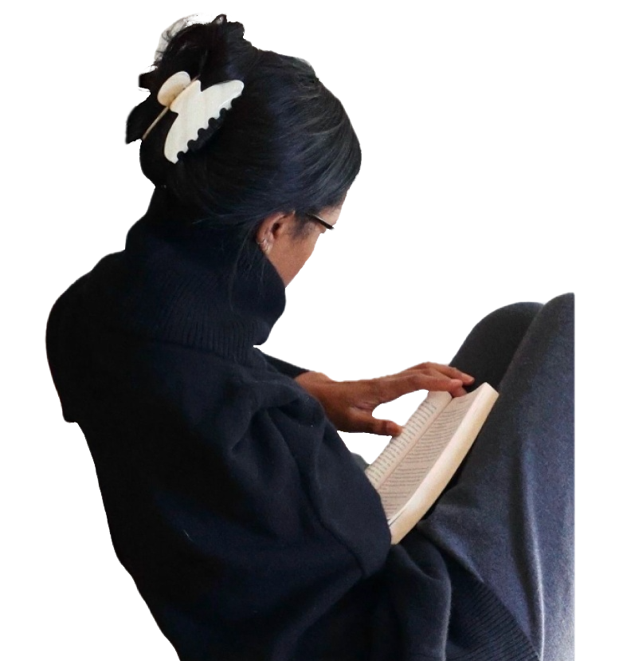
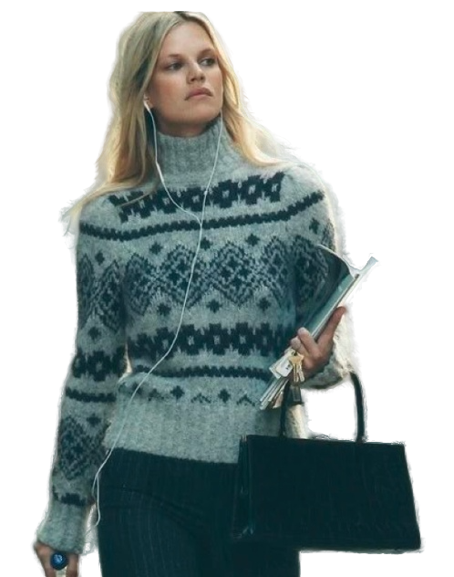
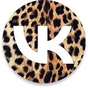
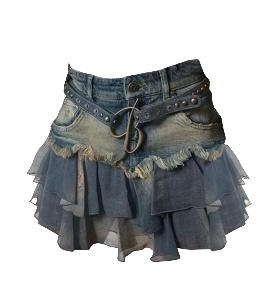
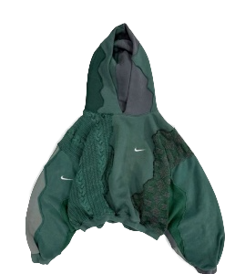
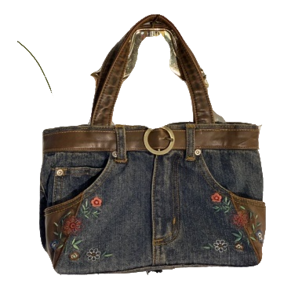

экология и устойчивость
эмоциональное благополучие
творчество как терапия
проблема рынкаразрыв между экологией и заботой о ментальном здоровье.
возможность для katársisзанять нишу терапевтического апсайклинга.
миссия проектаза 12 месяцев создать лояльное комьюнити и выйти на устойчивые продажи.
кто наш человек?
глубинный портрет аудитории

Эвелина, 19 лет, Москва
- любит тактильно приятные ткани, мягкие силуэты
- эстетика важнее трендов — одежда как самовыражение
- творческая личность: импульсивна в решениях, но ценит осознанный подход к вещам
- хобби: рисование, путешествия, изучение английского, чтение книг, скрапбукинг

Алиса, 25 лет, Санкт-Петербург
- интроверт: любит уединение, камерные пространства
- ценит минимализм, скандинавский стиль, лёгкую богемность
- обращает внимание на этичность производства, долговечность вещей
- покупает одежду осознанно — выбирает вещи на годы
анализ поля
наше уникальное окно
второе дыхание
экология ± доступность
экология ± доступность
post past
деконструкция ± искусство
деконструкция ± искусство
vina
романтика ± устойчивость
романтика ± устойчивость
katársis
экология ± терапия ± индивидуальность
экология ± терапия ± индивидуальность
сердце бренда
от миссии к сообщению
katarsis
миссия
создать безопасное пространство
ценности
забота, принятие, творчество
обещание
дать ощущение принятия и тактильного уюта
стратегия каналов
«тихий, но глубокий диалог»
1
ближний круг
глубина: вк видео, подкасты, email
2
второй круг
эстетика: телеграм, pinterest
3
третий круг
контекст: ambient ooh, коворкинги, кафе
креативный вызов
три пути к сердцу ЦА
тактильные истории
лаборатория чувств
экосистема тишины
фокус-группа
голос аудитории
“
Это как разговор по душам. Чувствую, что меня понимают.
тактильные истории
“
Похоже, меня хотят «починить». Холодно.
лаборатория чувств
“
Красиво, но я не идеальна, чтобы туда попасть.
экосистема тишины
концепция-победитель
«тактильные истории»
мы не продаём одежду. мы «издаём» истории в виде вещей.
воплощение
как это работает в каналах

вк видео — мини фильм
тг-канал — пост «было/стало»
pinterest — «ткани, которые обнимают»
макет постера для библиотеки
примеры материалов



почему это сработает?
01
исследование
инсайт
инсайт
02
стратегия
окно / сообщение
окно / сообщение
03
креатив
проверенная концепция
проверенная концепция
04
реализация
интегрированная кампания
интегрированная кампания